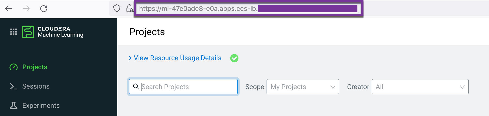
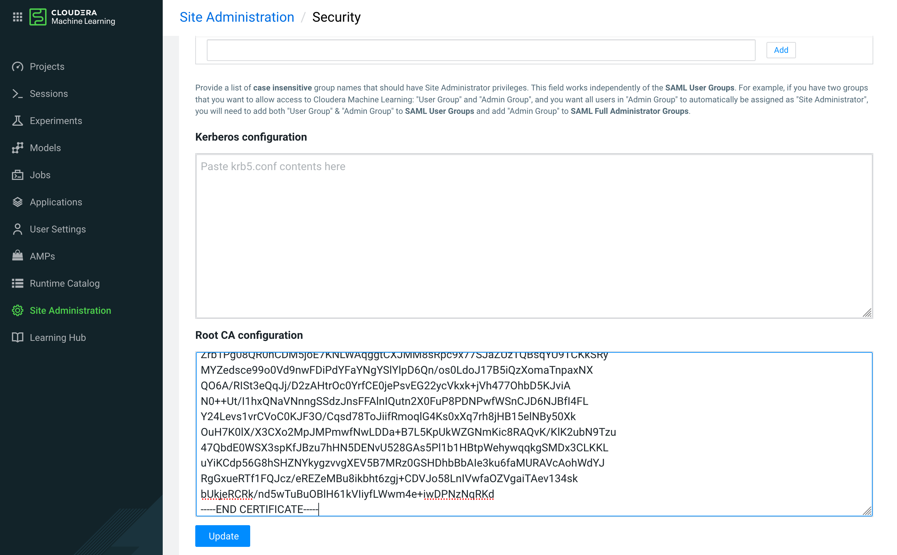

Sign CSR with AutoTLS Managed CA for ML Workspace
You can provision an ML workspace with TLS enabled, so that it can be accessed via https.
ML Workspace certificate requirements
-
You can provision an ML workspace with TLS enabled, so that it can be accessed via https.
- The certificate URL is generally of the form: <workspaceid>
.<cluster>
.<domain>
.com. Assuming an example URL for the certificate of ml-47e0ade8-e0a.cluster.yourcompany.com, check that the certificate correctly shows the corresponding Common Name (CN) and Subject Alternative Names (SAN):
- CN: ml-47e0ade8-e0a.cluster.yourcompany.com
- SAN: *.ml-47e0ade8-e0a.cluster.yourcompany.com
- SAN: ml-47e0ade8-e0a.cluster.yourcompany.com
- Given a certificate (ca-cert.pem) and its private key (ca-key.pem), You can use OpenSSL to sign a provided CSR (host.csr) and generate a certificate for ML workspace (host.crt). For the AutoTLS enabled CDP cluster:
- ca-cert.pem is
/var/lib/cloudera-scm-agent/agent-cert/cm-auto-in_cluster_ca_cert.pem - ca-key.pem is
/var/lib/cloudera-scm-server/certmanager/CMCA/private/ca_key.pem, which is hidden in the CM backend database - host.csr is generate by
openssl reqcommand with the corresponding Common Name (CN) tag - host.crt is the target ML Workspace certificate
- ca-cert.pem is
Export AutoTLS CMCA package from CM database
PostgreSQL
- Blob data can be easily exported by the
copycommand.
psql -U scm -h cb01.ecs.ycloud.com -p 5432 -d scm -c "\copy (SELECT encode(CERTTAR, 'hex') from CERTIFICATES) to STDOUT" | while read -N2 code; do printf "\x$code"; done > ~/cmca.tar.gz
mkdir -p /var/lib/cloudera-scm-server/certmanager
tar zxvf ~/cmca.tar.gz -C /var/lib/cloudera-scm-server/certmanager
Oracle
- Open SSH terminal for Oracle server and create a directory for export BLOB data.
su - oracle
mkdir -p /home/oracle/blobs
sqlplus / as sysdba
SQL>create or replace directory BLOBS as '/home/oracle/blobs/';
SQL>grant read,write on directory BLOBS to scm;
SQL>grant create procedure to scm;
SQL>exit
- Open SSH terminal for Oracle client (e.g. CM server). Please create a procedure and execute it.
su - oracle
sqlplus scm/password@orcl
SQL>CREATE OR REPLACE PROCEDURE blob_to_file (p_blob IN BLOB,
p_dir IN VARCHAR2,
p_filename IN VARCHAR2)
AS
l_file UTL_FILE.FILE_TYPE;
l_buffer RAW(32767);
l_amount BINARY_INTEGER := 32767;
l_pos INTEGER := 1;
l_blob_len INTEGER;
BEGIN
l_blob_len := DBMS_LOB.getlength(p_blob);
-- Open the destination file.
l_file := UTL_FILE.fopen(p_dir, p_filename,'wb', 32767);
-- Read chunks of the BLOB and write them to the file until complete.
WHILE l_pos <= l_blob_len LOOP
DBMS_LOB.read(p_blob, l_amount, l_pos, l_buffer);
UTL_FILE.put_raw(l_file, l_buffer, TRUE);
l_pos := l_pos + l_amount;
END LOOP;
-- Close the file.
UTL_FILE.fclose(l_file);
EXCEPTION
WHEN OTHERS THEN
-- Close the file if something goes wrong.
IF UTL_FILE.is_open(l_file) THEN
UTL_FILE.fclose(l_file);
END IF;
RAISE;
END blob_to_file;
/
SQL>DECLARE
l_blob BLOB;
BEGIN
-- Get LOB locator
select CERTTAR
INTO l_blob
from scm.CERTIFICATES
where CERTIFICATE_ID=1546340689;
blob_to_file(p_blob => l_blob,
p_dir => 'BLOBS',
p_filename => 'cmca.tar.gz');
END;
/
SQL>exit
- Open SSH terminal for Oracle server and copy file ‘cmca.tar.gz’ to CM server.
scp /home/oracle/blobs/cmca.tar.gz root@cb01.ecs.ycloud.com:~
- Open SSH terminal for CM server and unzip files into the target directory
/var/lib/cloudera-scm-server/certmanager.
mkdir -p /var/lib/cloudera-scm-server/certmanager
tar zxvf ~/cmca.tar.gz -C /var/lib/cloudera-scm-server/certmanager
Decode password for ca_key.pem
- The private key (ca-key.pem) is under directory /var/lib/cloudera-scm-server/certmanager/CMCA/private.
# ll /var/lib/cloudera-scm-server/certmanager
total 24
drwx------ 4 cloudera-scm cloudera-scm 4096 Aug 10 23:26 CMCA
-rw-r----- 1 cloudera-scm cloudera-scm 107 Aug 10 23:26 frozen_config.ini
-rwxr-xr-x 1 cloudera-scm cloudera-scm 140 Aug 10 23:26 generate_host_cert
drwx------ 3 cloudera-scm cloudera-scm 4096 Aug 10 23:26 hosts-key-store
drwx------ 2 cloudera-scm cloudera-scm 4096 Aug 10 23:26 private
drwxr-xr-x 2 cloudera-scm cloudera-scm 4096 Aug 10 23:26 trust-store
- Get obfuscated password from file .ca_key_password
# cat /var/lib/cloudera-scm-server/certmanager/CMCA/private/.ca_key_password
e298a3f09f92a3e298a0 1 Zglpbged7QHSzeJnPveIjclBk7l7nR1uAqOXXNoPpZ2 //k2XHb3l26V5eSYWbeWdBIC0nqWmaR1fUOOn6tJNTPRxyVoHQPjAycEYA==
- Prepare python script for decoding password. Note: please paste the above content for the variable
obfuscated_password.
cat > tmp.py << EOF
import hashlib
from subprocess import Popen, PIPE, STDOUT
def hex_str(byteArr):
return ''.join(format(ord(x), '02x') for x in byteArr)
obfuscated_password ='e298a3f09f92a3e298a0 1 Zglpbged7QHSzeJnPveIjclBk7l7nR1uAqOXXNoPpZ2 //k2XHb3l26V5eSYWbeWdBIC0nqWmaR1fUOOn6tJNTPRxyVoHQPjAycEYA=='
hdr, version, random, enc = obfuscated_password.split()
OBFUSCATION_SECRET="f09f998ff09f93bff09fa49e"
OBFUSCATION_HEADER="e298a3f09f92a3e298a0"
m=hashlib.sha512()
m.update(random)
m.update(OBFUSCATION_SECRET)
m2 = m.copy()
m.update("IV")
iv = m.digest()[:16] # 128 bits for IV
m2.update("KEY")
key = m2.digest()[:32] # 256 bits for key
p = Popen(["openssl", "enc", "-d", "-aes-256-ofb",
"-K", hex_str(key),
"-iv", hex_str(iv),
"-a", "-A",
],
stdin=PIPE, stdout=PIPE, stderr=PIPE)
stdout, stderr = p.communicate(enc)
print (stdout)
EOF
Generate CSR for ML workspace and sign it with AutoTLS managed CA
- Get the certificate URL of ML workspace from your browser. In this case
https://ml-47e0ade8-e0a.apps.ecs-lb.ecs.openstack.com/

- Open SSH terminal for CM server and create a CSR(Certificate Signing Request).
export host=ml-47e0ade8-e0a.apps.ecs-lb.ecs.openstack.com
openssl req -new -newkey rsa:3072 -nodes -keyout ${host}.key -subj "/CN=${host}/OU=PS/O=Cloudera, Inc./ST=CA/C=US" -out ${host}.csr
openssl req -in ${host}.csr -text -verify
- Sign CSR
echo "[default]
subjectAltName = @alt_names
[alt_names]
DNS.1 = *.${host}
DNS.2 = ${host}" > cml.ext
openssl x509 -req -extfile cml.ext -days 365 -in ${host}.csr -CA /var/lib/cloudera-scm-agent/agent-cert/cm-auto-in_cluster_ca_cert.pem -CAkey /var/lib/cloudera-scm-server/certmanager/CMCA/private/ca_key.pem -CAcreateserial -out ${host}.crt -passin pass:$(python tmp.py)
openssl x509 -in ${host}.crt -text -noout
- Copy to ECS server node (copy the signed cert (.crt), the key file (.key))
# scp ${host}.crt ${host}.key cloudera@ds01.ecs.openstack.com:~
ml-47e0ade8-e0a.apps.ecs-lb.ecs.openstack.com 100% 1749 795.9KB/s 00:00
ml-47e0ade8-e0a.apps.ecs-lb.ecs.openstack.com 100% 2484 1.9MB/s 00:00
Upload certificate into CML workspace
- Open SSH terminal for ECS server node and create a Kubernetes secret inside the previously provisioned ML workspace namespace, and name the secret cml-tls-secret.
# export host=ml-47e0ade8-e0a.apps.ecs-lb.ecs.openstack.com
# mv /home/cloudera/$host.* ~/
# kubectl delete secret/cml-tls-secret -n cml01
# kubectl create secret tls cml-tls-secret --cert=${host}.crt --key=${host}.key -o yaml --dry-run | kubectl -n cml01 create -f -
- In Site Administration > Security > Root CA configuration, paste the root CA certificate (/var/lib/cloudera-scm-agent/agent-cert/cm-auto-in_cluster_ca_cert.pem) to the workspace.
